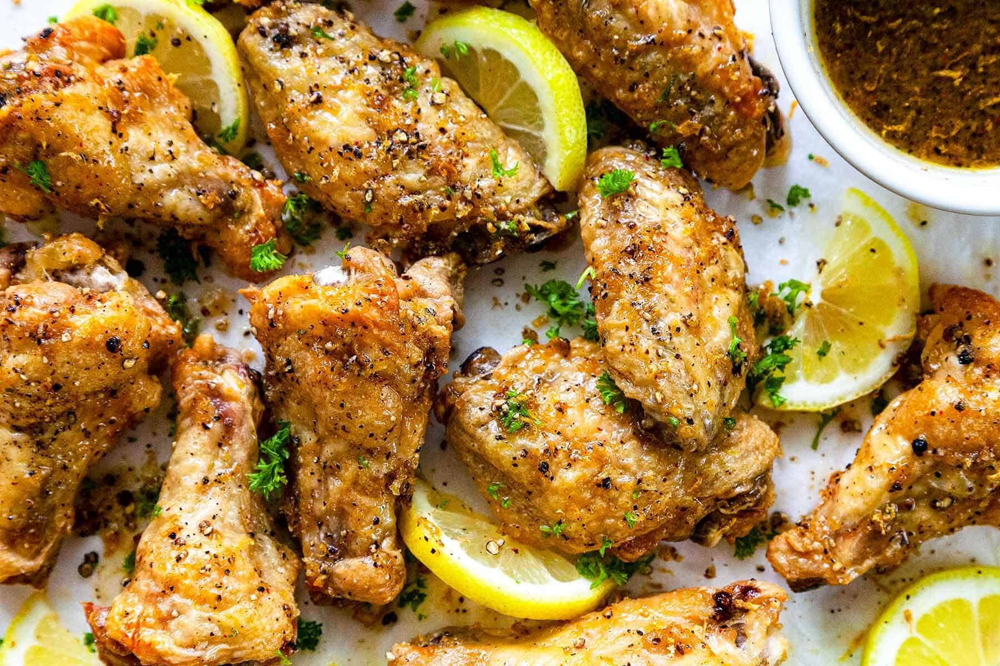

Home
Lemon Pepper Wings

Description
Yet another great variation on the ever-popular tailgating and sports-bar snack and very simple and easy to make. I have tried this with several brands of lemon pepper seasonings and found I actually liked the cheapest one the most. It was a tad twangier than the others and was more suited to my liking. I found it at my local food store in the seasoning section. I also tend to lean towards a lemon pepper seasoning that includes a white pepper and less black.
Ingredients
- 2 cups peanut oil, or as needed
- ¼ cup unsalted butter, melted
- 2 tablespoons lemon pepper seasoning
- 6 pearl onions
- 16 chicken wings
Steps
- Heat oil in a deep-fryer or large saucepan to 350 degrees F (175 degrees C).
- Whisk butter and lemon pepper seasoning together in a large bowl.
- Place onions in the preheated oil and cook until just beginning to brown, about 5 minutes. Remove and discard onions.
- Working in batches, cook wings in oil until crispy on the outside and cooked through, about 8 minutes. Remove wings to a paper towel-lined plate to drain excess oil.
- Toss wings with lemon pepper mixture until completely coated. Return to paper towel-lined plate to drain excess liquid.